ft.trump.post ft.biden.post
1 100 0
2 15 15
3 0 85
4 60 100
5 90 0
6 0 100
7 70 0
8 0 50
9 0 85
10 30 70Today’s Agenda
Correlation Analyses
Pearson’s correlation, Phi coefficient, Spearman’s rank
New Notes: Correlation_Analysis.R
Justin Leinaweaver (Spring 2026)
Correlation Does Not Imply Causation
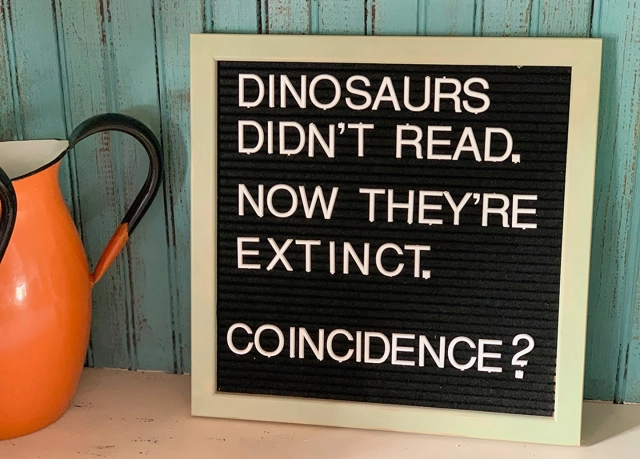
Textbook Question 1
What is correlation analysis and when is it useful?
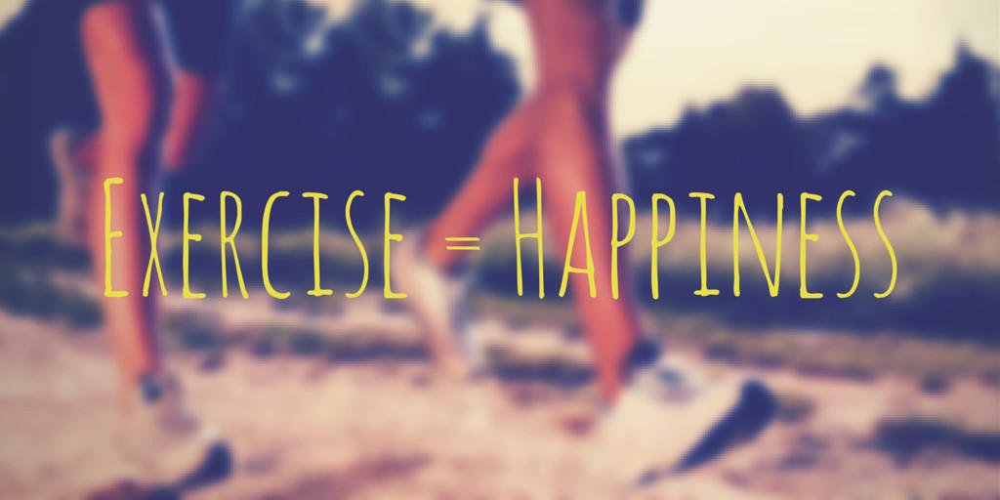
Textbook Question 1
What is regression analysis and when is it useful?
\[ \text{Pearson's } r = \frac{\Sigma(\frac{x_i - \bar{x}}{s_x}) (\frac{y_i - \bar{y}}{s_y})}{n-1} \]
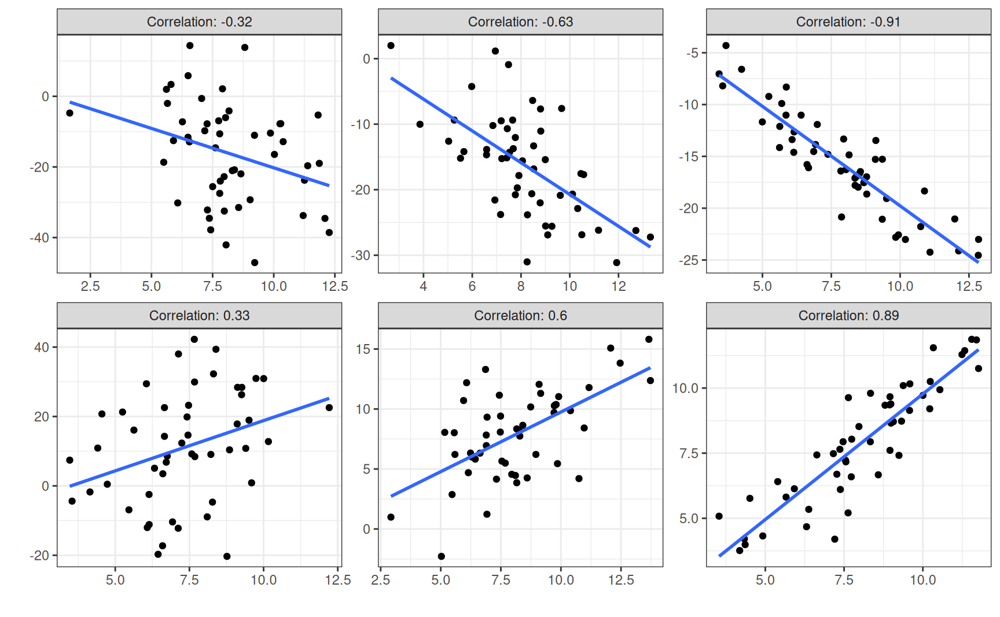
\[ \text{Pearson's } r = \frac{\Sigma(\frac{x_i - \bar{x}}{s_x}) (\frac{y_i - \bar{y}}{s_y})}{n-1} \]
Person 1: Trump 100, Biden 0
\[ \frac{100 - 38}{40} \times \frac{0 - 53}{35} = 1.55 \times -1.51 = -2.34\]
\[ \text{Pearson's } r = \frac{\Sigma(\frac{x_i - \bar{x}}{s_x}) (\frac{y_i - \bar{y}}{s_y})}{n-1} \]
Person 1: Trump 100, Biden 0
\[ \frac{100 - 38}{40} \times \frac{0 - 53}{35} = 1.55 \times -1.51 = -2.34\] Person 2: Trump 50, Biden 50
\[ \frac{50 - 38}{40} \times \frac{50 - 53}{35} = .3 \times -.09 = -0.03\]
\[ \text{Pearson's } r = \frac{\Sigma(\frac{x_i - \bar{x}}{s_x}) (\frac{y_i - \bar{y}}{s_y})}{n-1} \]
cor(x, y, method)
“x” is variable 1
“y” is variable 2
“method” can be “pearson” or “spearman”
The Negative Correlation Between Trump and Biden Approval
\[ \text{Pearson's } r = \frac{\Sigma(\frac{x_i - \bar{x}}{s_x}) (\frac{y_i - \bar{y}}{s_y})}{n-1} \]
The Intuitions of OLS Regression
Take a piece of prepared graph paper and a ruler
Draw a y-axis (1-7) and an x-axis (1-9)
Plot the following (X, Y) coordinates
| X | Y |
|---|---|
| 2 | 3 |
| 3 | 2 |
| 4 | 4 |
| 5 | 3 |
| 6 | 5 |

The Regression Formula for a Line
\[ y = \alpha + \beta (x) \]
The Outcome to be Explained
| Y |
|---|
| 3 |
| 2 |
| 4 |
| 3 |
| 5 |

Relationship Summary 1: Ignoring the X variable
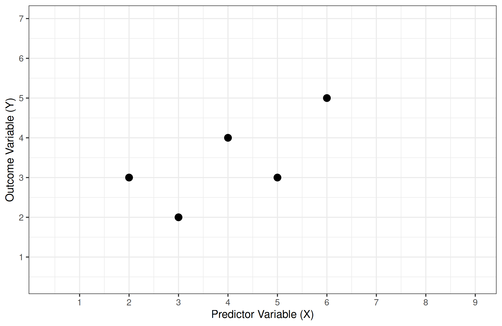
Relationship Summary 1: Ignoring the X variable
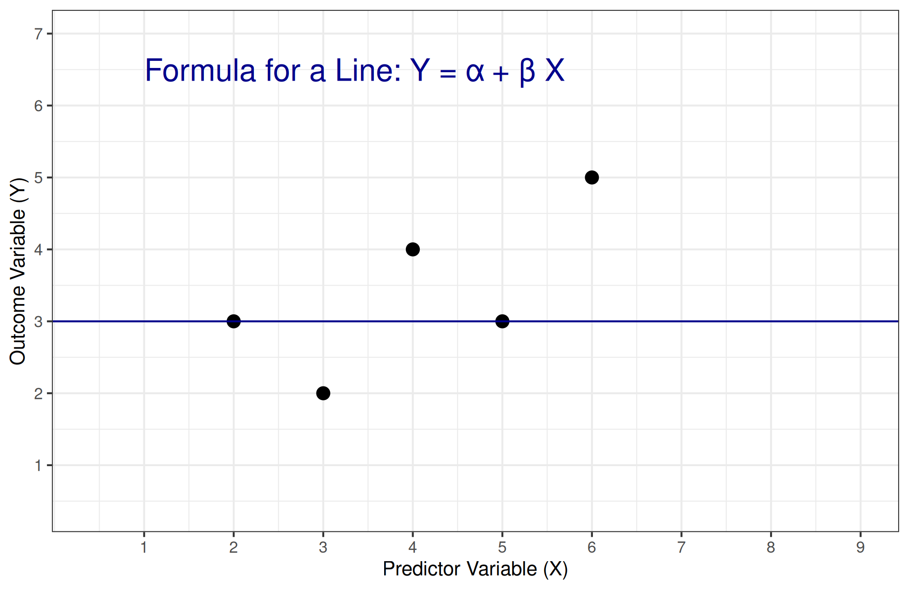
Relationship Summary 1: Ignoring the X variable
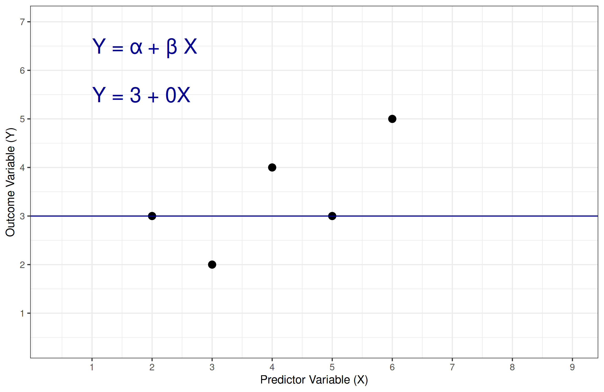
Relationship Summary 1: Ignoring the X variable
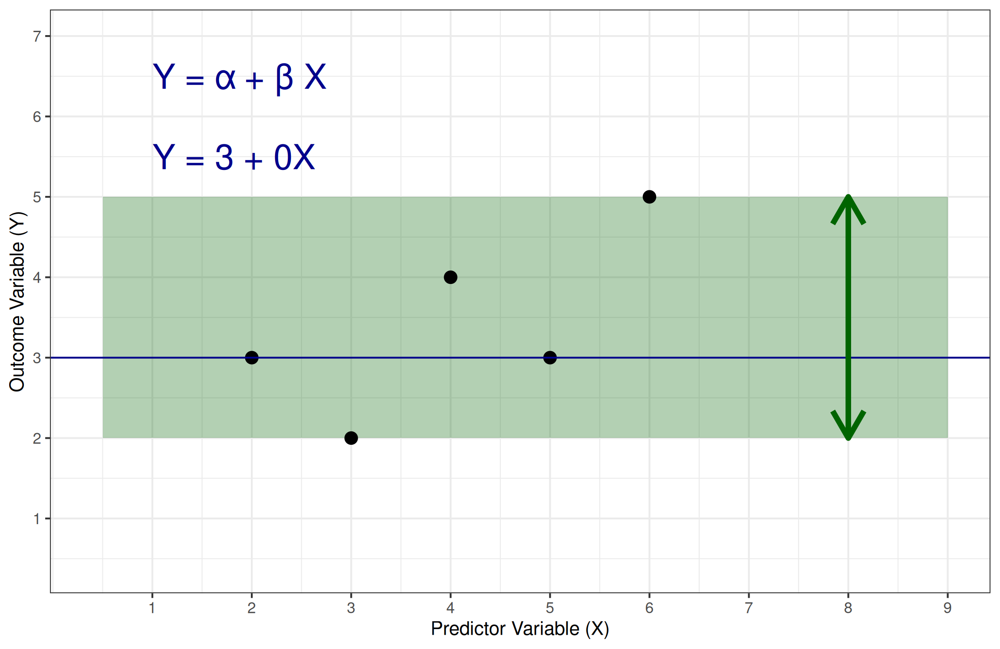
Relationship Summary 1: Ignoring the X variable
Relationship Summary 1: Ignoring the X variable
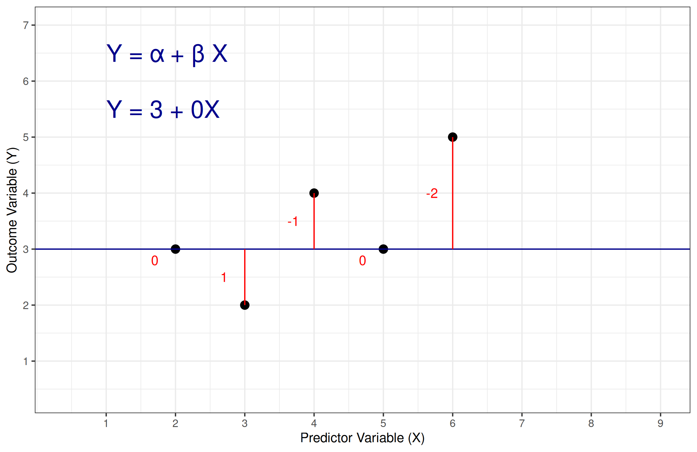
Relationship Summary 1: Ignoring the X variable
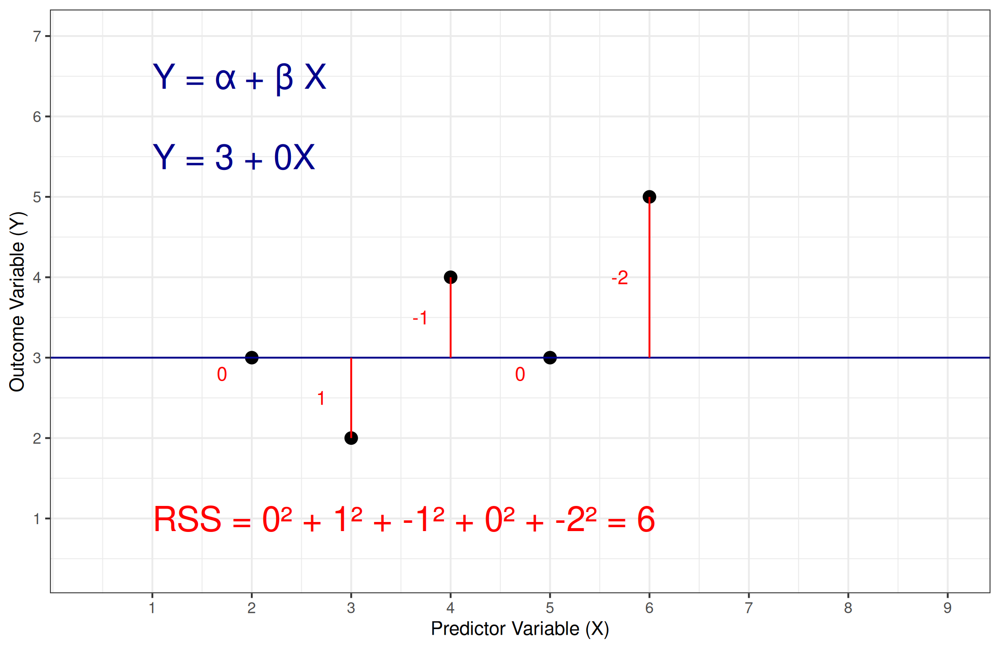
Relationship Summary 2: Adapt the line for two observations
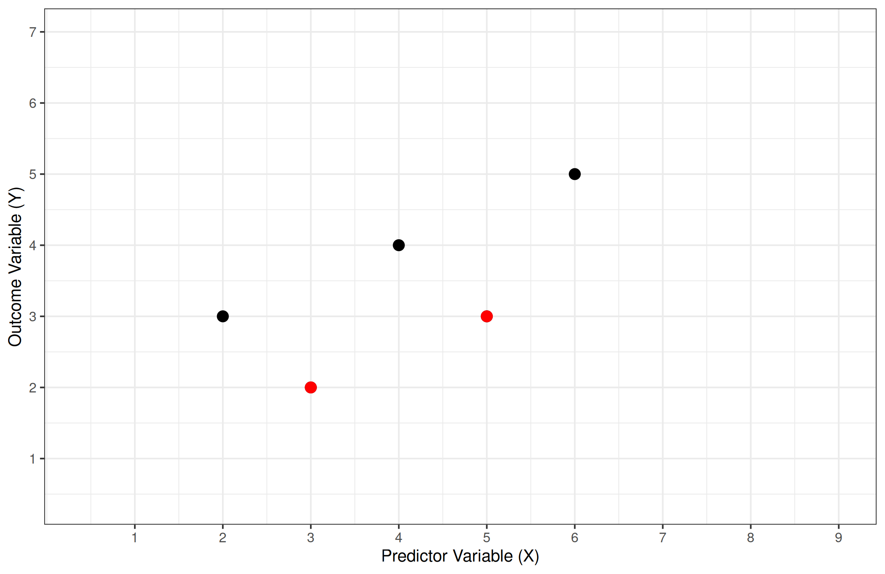
Relationship Summary 2: Adapt the line for two observations

Relationship Summary 2: Adapt the line for two observations
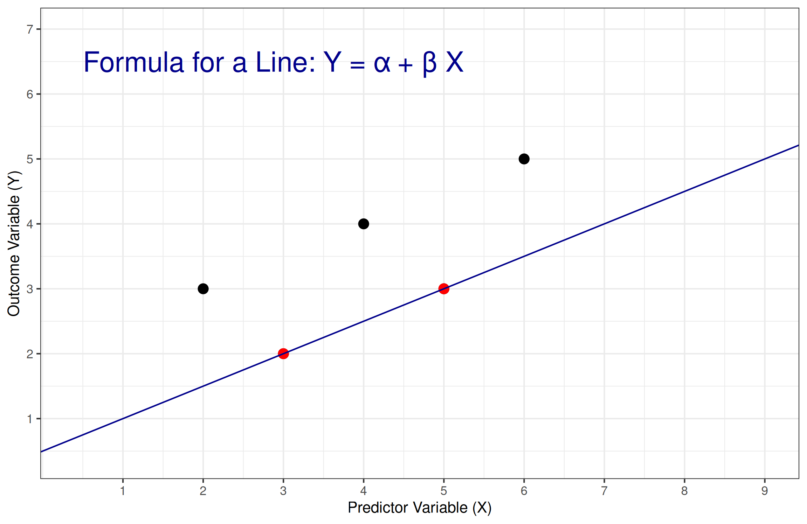
Relationship Summary 2: Adapt the line for two observations
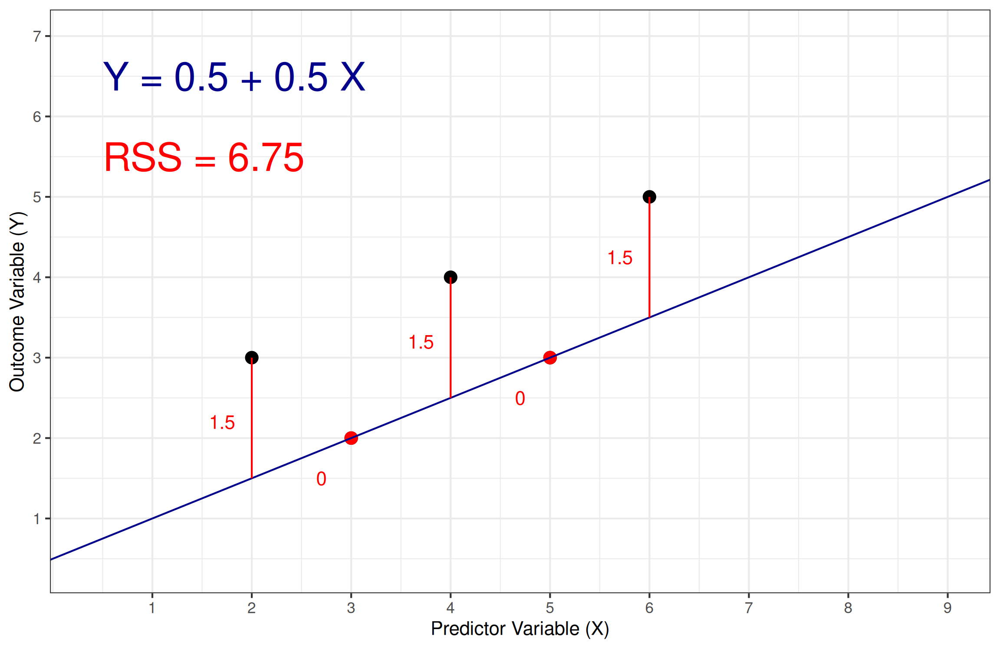
Relationship Summary 3: Adapt the line for three observations
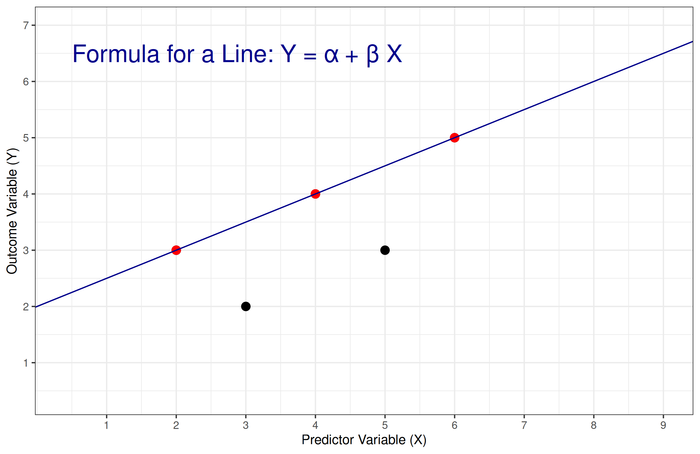
Relationship Summary 3: Adapt the line for three observations
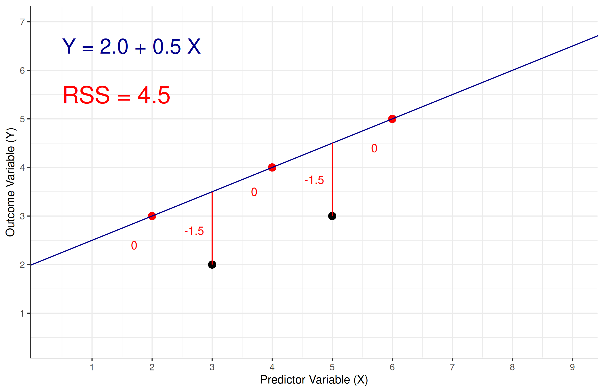
For Next Class
Finish Chapter 11
Submit Exercise 3
Submit your line of best fit BY HAND (new data on Canvas)
- Draw it
- Estimate the line
- Calculate the RSS
| X | Y |
|---|---|
| 1 | 2 |
| 2 | 4 |
| 3 | 4 |
| 4 | 3 |
| 5 | 5 |
| 5 | 6 |